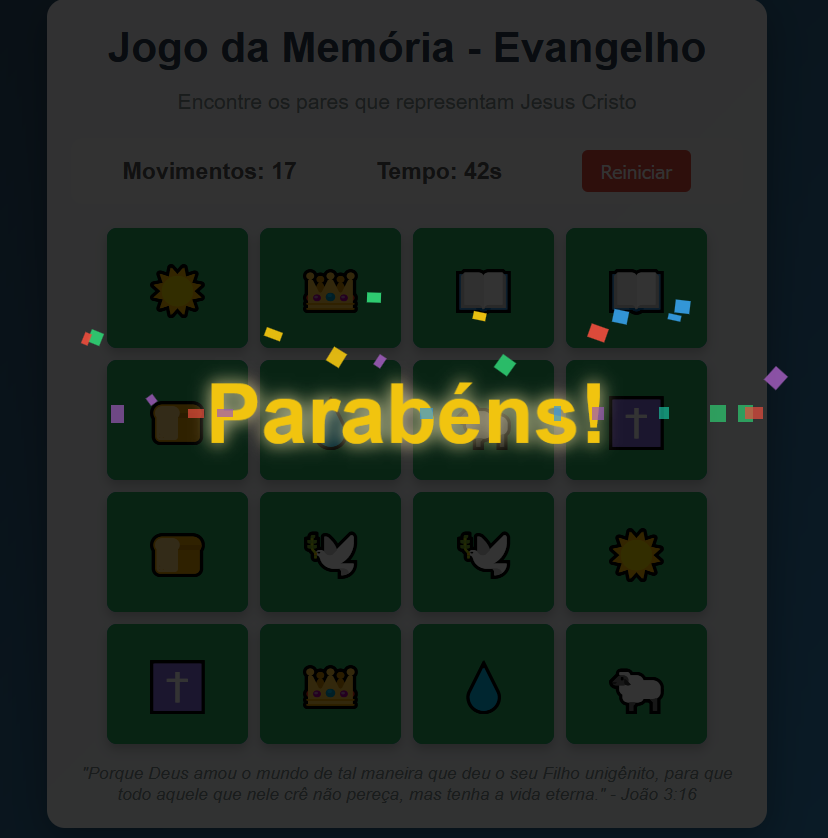
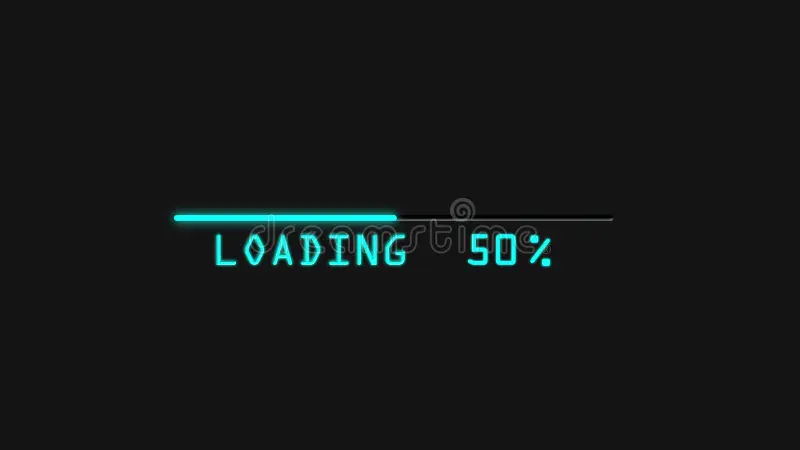

Antonio Júnior
Desenvolvedor Front-end no Programa Trilhas
Biscoito Zen
Um projeto web interativo que simula a experiência de abrir um biscoito da sorte digital. Ao clicar, revela uma mensagem motivacional gerada em tempo real pela API ZenQuotes.

Jogo da Memória
Jogo da Memória com interface responsiva, contador de tempo e movimentos, ranking de melhores pontuações e animações suaves.
DevBattle
Quiz interativo para desenvolvedores! Desafie seus conhecimentos em programação, pontue de acordo com a dificuldade e dispute o topo do ranking.

Próximo Projeto
Em breve novos projetos serão adicionados aqui conforme avanço no Programa Trilhas.